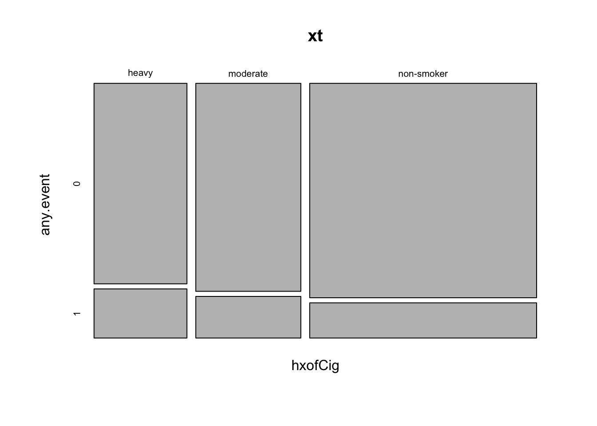
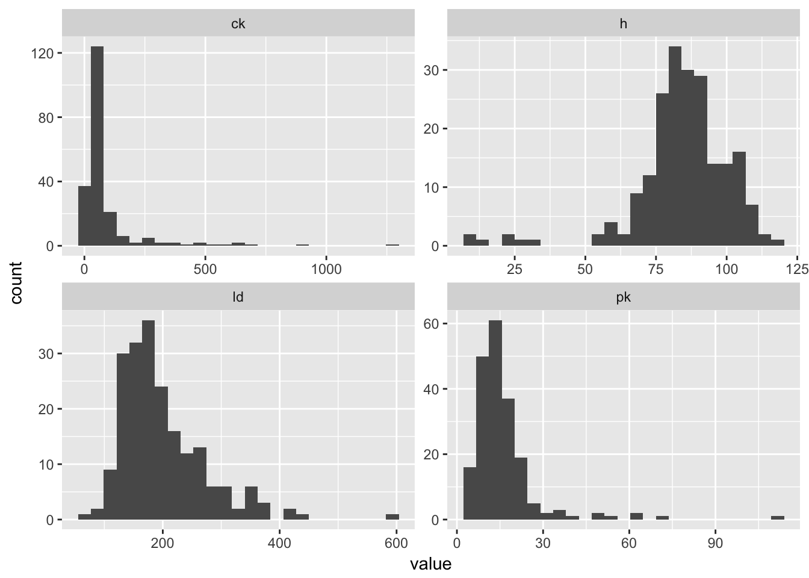
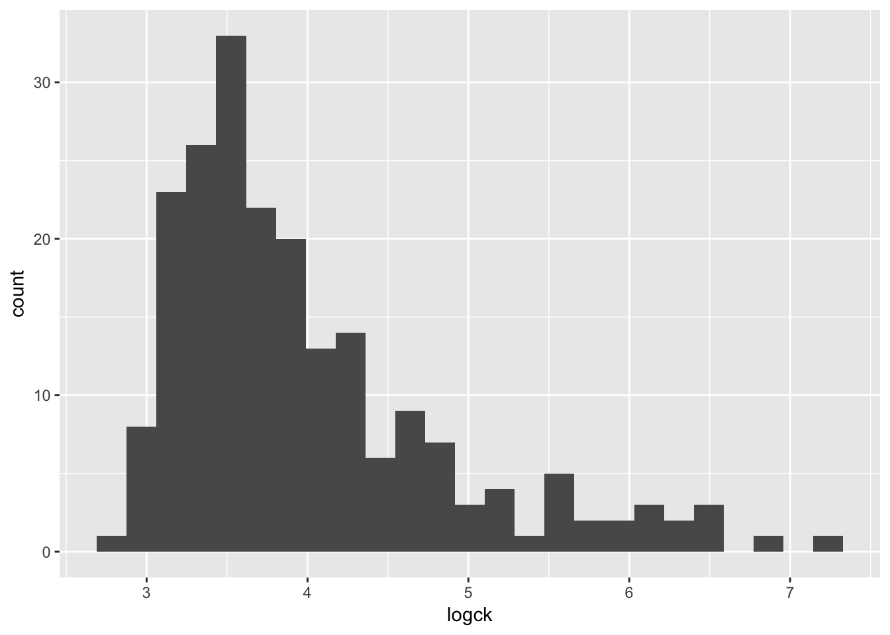

Essential Statistics Homework
(Refer back to the Essential Statistics lesson).
Key Concepts
- Descriptive statistics
- Hypothesis testing
- Normality assumptions
- Cross tabulation
- Logistic regression
- Interpreting model summaries
The datasets we’ll be using for this assignment are both curated and hosted by the Vanderbilt Department of Biostatistics.
Stress Tests
Dobutamine is a drug that is used during echocardiograms (aka “stress tests”), which are clinical tests used to estimate heart function. The treatment causes heart rate to increase, and its effects at different dosages were measured in a study published in 1999. We’ll be using the data behind this paper to answer the questions that follow.
# Load libraries
library(readr)
library(dplyr)
# Read data
stress <- read_csv("data/stressEcho.csv")
# Take a look
stress## # A tibble: 558 x 32
## id bhr basebp basedp pkhr sbp dp dose maxhr pctMphr mbp
## <int> <int> <int> <int> <int> <int> <int> <int> <int> <int> <int>
## 1 1 92 103 9476 114 86 9804 40 100 74 121
## 2 2 62 139 8618 120 158 18960 40 120 82 158
## 3 3 62 139 8618 120 157 18840 40 120 82 157
## 4 4 93 118 10974 118 105 12390 30 118 72 105
## 5 5 89 103 9167 129 173 22317 40 129 69 176
## 6 6 58 100 5800 123 140 17220 40 123 83 140
## 7 7 63 120 7560 98 130 12740 40 98 71 130
## 8 8 86 161 13846 144 157 22608 40 144 111 157
## 9 9 69 143 9867 115 118 13570 40 113 81 151
## 10 10 76 105 7980 126 125 15750 40 126 94 125
## # ... with 548 more rows, and 21 more variables: dpmaxdo <int>,
## # dobdose <int>, age <int>, gender <chr>, baseEF <int>, dobEF <int>,
## # chestpain <int>, restwma <int>, posSE <int>, newMI <int>,
## # newPTCA <int>, newCABG <int>, death <int>, hxofHT <int>, hxofDM <int>,
## # hxofCig <chr>, hxofMI <int>, hxofPTCA <int>, hxofCABG <int>,
## # any.event <int>, ecg <chr>Note that in addition measuring dobutamine dosages during each stress test, the authors collected information on other variables including: resting heart rate, max heart rate, blood pressure, age and (most importantly) whether or not the patient experienced any cardiac event in the 12 months that followed the test.
Before answering the questions, make sure to review the data dictionary:
http://biostat.mc.vanderbilt.edu/wiki/pub/Main/DataSets/stressEcho.html
Note that the data were originally coded by the authors of the study but were then partially recoded when curated. Pay particular attention to the any.event variable (did the subject experience any cardiac event over 12 months following the stress test), which should be interpeted as 0=NO, 1=YES. The top of the data dicionary makes this clear that all event variables are recoded such that 0=no and 1=yes, which is more conventional.
- What is the highest maximum heart rate double product with Dobutamine (
dpmaxdo)?
max(stress$dpmaxdo)## [1] 45114- What is the cutoff for the 99th percentile for the measurment above?
HINT: The quantile() function defaults to 0, 0.25, .5, .75 and 1 but can accept arbitrary threshholds. See ?quantile and look for the probs argument.
quantile(stress$dpmaxdo, probs = 0.99)## 99%
## 31948.56- Use ggplot2 to create a histogram showing the distribution of the
dpmaxdovalues.
library(ggplot2)
ggplot(stress, aes(dpmaxdo)) +
geom_histogram()
- The plot above indicates that the distribution is approximately normal, with the except of a few outliers at the right tail. With the normality assumption satisfied, perform a two sample t-test to compare the mean double product max heart values between those who did or did not experience any cardiac event (
any.event). Assume equal variances between these groups.
t.test(dpmaxdo ~ any.event, data = stress, var.equal = TRUE)##
## Two Sample t-test
##
## data: dpmaxdo by any.event
## t = 2.0707, df = 556, p-value = 0.03885
## alternative hypothesis: true difference in means is not equal to 0
## 95 percent confidence interval:
## 60.12983 2279.88469
## sample estimates:
## mean in group 0 mean in group 1
## 18736.49 17566.48- What is the p-value for this test? Make sure this is accessed from the results (using the
$operator) rather than simply re-typing the value. Feel free to extract the p-value directly from the t-test, or first use broom::tidy() to tidy the model first.
t.test(dpmaxdo ~ any.event, data = stress, var.equal = TRUE)$p.value## [1] 0.03885185- The smoking history column (
hxofCig) is represented categorically as “heavy”, “moderate” and “non-smoker”. Create a margin table showing the total counts of individuals in each smoking history category, for all individuals who either did or did not have any cardiac event by smoking status. Next, show proportions over the row margin (what percentage of each category had any cardiac event?).
xt <- xtabs(~ hxofCig + any.event, data = stress)
addmargins(xt)## any.event
## hxofCig 0 1 Sum
## heavy 98 24 122
## moderate 115 23 138
## non-smoker 256 42 298
## Sum 469 89 558round(prop.table(xt, margin=1), 3)## any.event
## hxofCig 0 1
## heavy 0.803 0.197
## moderate 0.833 0.167
## non-smoker 0.859 0.141- Create a mosaic plot to explore the tabulated counts visually.
mosaicplot(xt)
- Now use a chi-squared test for the independence of smoking history and cardiac event.
chisq.test(xt)##
## Pearson's Chi-squared test
##
## data: xt
## X-squared = 2.0794, df = 2, p-value = 0.3536- Load the broom package and “tidy” the model output above. If you don’t have the broom package, install it first.
# If you don't have broom installed:
# install.packages("broom")
library(broom)
tidy(chisq.test(xt))## statistic p.value parameter method
## 1 2.079445 0.3535527 2 Pearson's Chi-squared testMuscular Dystrophy Genetics
The questions that follow are based on a data collected to examine several blood serum markers believed to be associated with genetics for a specific kind of muscular dystrophy (DMD). The data were analyzed and results reported in a 1985 paper. In particular, the authors were interested in whether a woman’s DMD carrier status (carrier) was related to the blood serum markers creatine kinase (ck), hemopexin (h), pyruvate kinase (pk) and lactate dehydrogenase (ld).
Use the following to read and store the data:
dmd <- read_csv("data/dmd.csv")For more information on the data set see:
http://biostat.mc.vanderbilt.edu/wiki/pub/Main/DataSets/dmd.html
- What is the average value for lactate dehydrogenase?
mean(dmd$ld, na.rm = TRUE)## [1] 198.5891- The four serum markers (creatine kinase, hemopexin, pyruvate kinase and lactate dehydrogenase) are all predictors of interest in this case. Use ggplot2 to create histograms to assess the normality of the distribution for each of these variables.
HINT: The plot below uses gather() from tidyr to transform the data so all histograms can be rendered in a single “facet wrapped” plot. Feel free to give this a shot or create separate histograms for each variable. Either method is acceptable.
library(ggplot2)
library(tidyr)
library(dplyr)
dmd %>%
gather(marker, value,ck:ld) %>%
ggplot(aes(value)) +
geom_histogram(bins = 25) +
facet_wrap(~marker, scales = "free")
- All of these columns have outliers and are (at least slightly) skewed. But
ckseems to require the most attention. Try using a log transformation on that column and create another histogram.
dmd %>%
mutate(logck = log(ck)) %>%
ggplot(aes(logck)) +
geom_histogram(bins = 25)
- Even when transformed, the cytokine kinase is a little skewed. Assuming we can tolerate this, let’s try fitting a binary logistic regression model that predicts the mother’s status as carrier based on the values of the four blood serum markers. Don’t forget to use the log version of
ck, and to usesummary()on the model object to view the coefficients.
fit <- glm(carrier ~ log(ck) + h + pk + ld, data = dmd, family= "binomial")
summary(fit)##
## Call:
## glm(formula = carrier ~ log(ck) + h + pk + ld, family = "binomial",
## data = dmd)
##
## Deviance Residuals:
## Min 1Q Median 3Q Max
## -2.35125 -0.41514 -0.15394 0.08287 2.40056
##
## Coefficients:
## Estimate Std. Error z value Pr(>|z|)
## (Intercept) -25.958905 4.287090 -6.055 1.40e-09
## log(ck) 2.862509 0.656316 4.361 1.29e-05
## h 0.112805 0.028248 3.993 6.51e-05
## pk 0.103212 0.043780 2.358 0.0184
## ld 0.012836 0.005259 2.441 0.0147
##
## (Dispersion parameter for binomial family taken to be 1)
##
## Null deviance: 250.077 on 193 degrees of freedom
## Residual deviance: 99.005 on 189 degrees of freedom
## (15 observations deleted due to missingness)
## AIC: 109.01
##
## Number of Fisher Scoring iterations: 7- The coefficient (estimate) for each explanatory variable gives us the log of the odds ratio. Exponentiate the estimates to make them more interpretable (i.e. the odds ratio for each 1-unit increase in the predictor variable).
round(exp(fit$coefficients), 4)## (Intercept) log(ck) h pk ld
## 0.0000 17.5054 1.1194 1.1087 1.0129